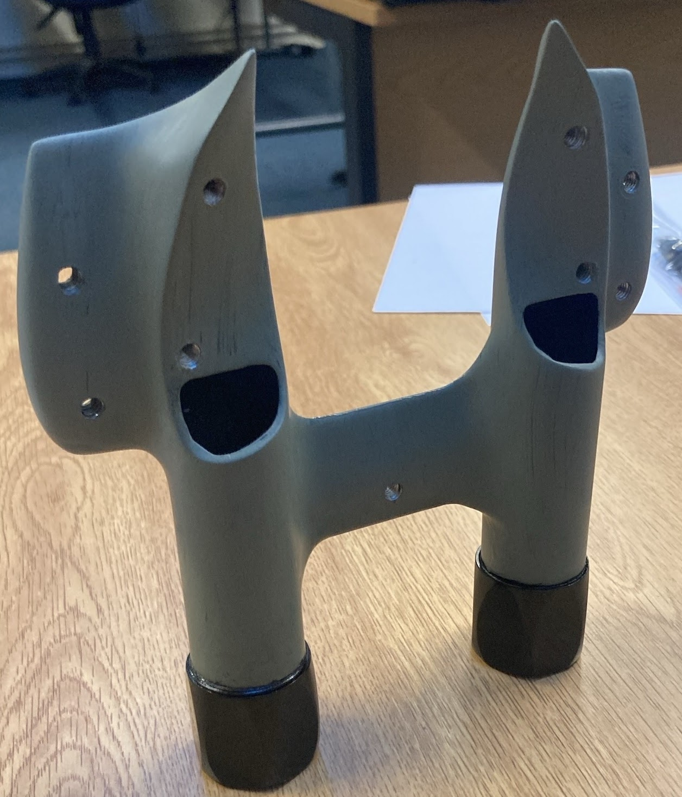
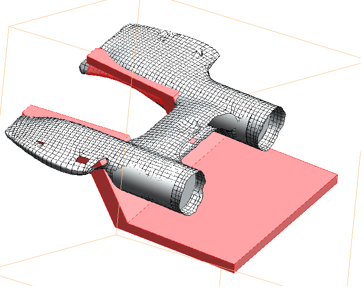
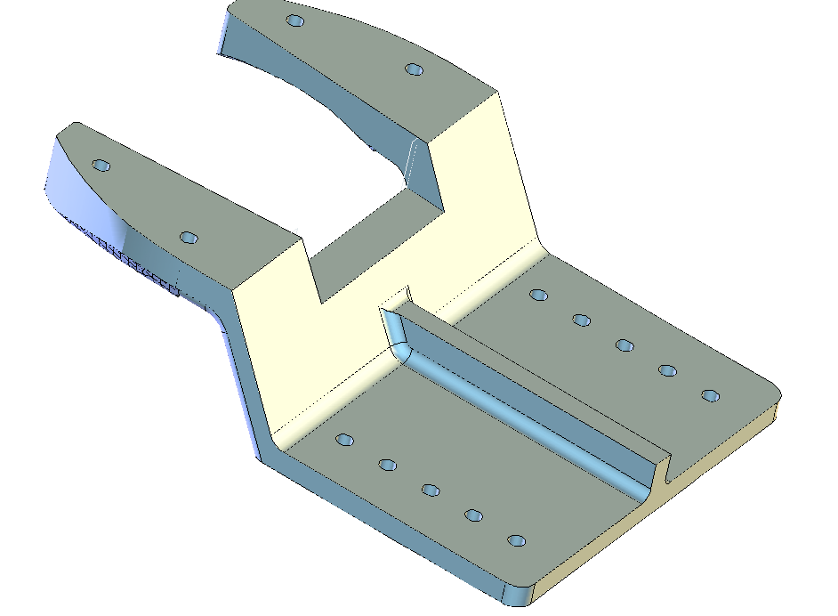
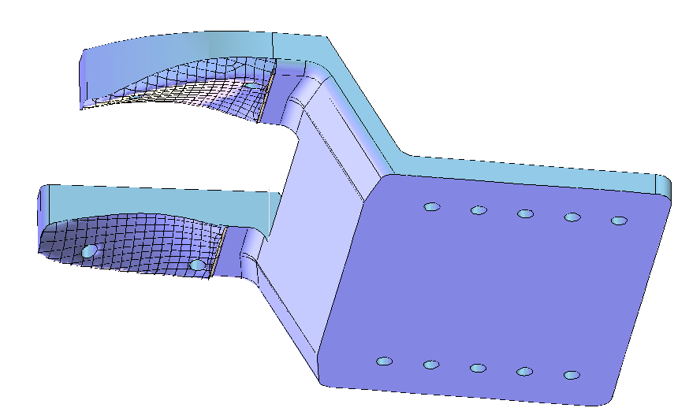
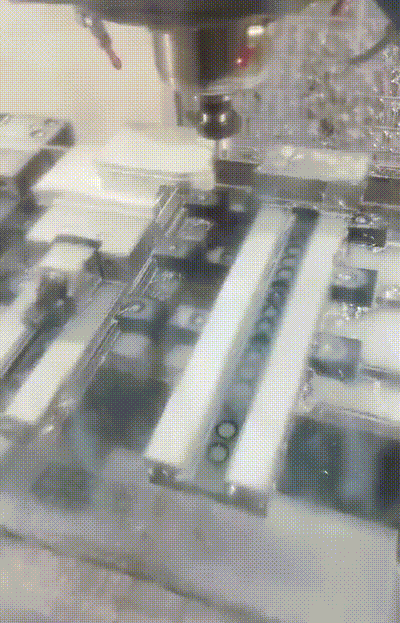
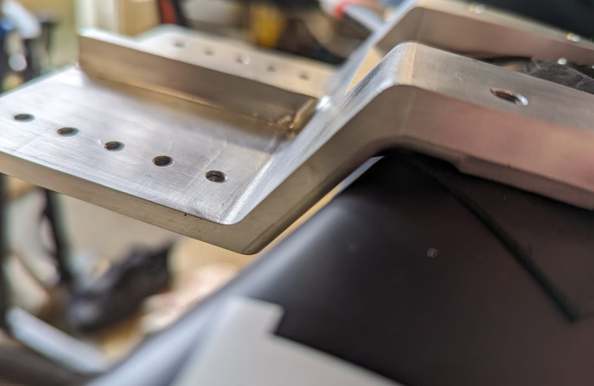
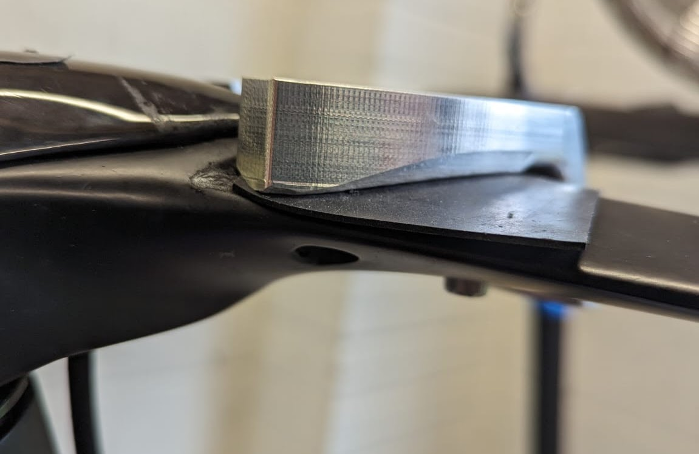
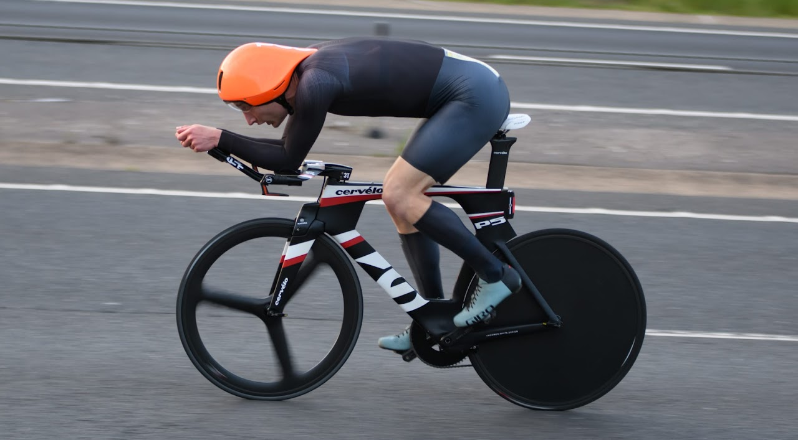

Bike Mods 2023/2024
Last year’s wind tunnel testing gave me a lot to think about. While we only managed a limited number of tests (testing positions is time-consuming, especially for an individual with non-standard geometry like myself), we identified some clear trends: big gains were to be had from going lower, longer, and narrower. The potential gains are far larger than anything I could hope to achieve by simply improving my power output. Time trialling is a funny old sport, where time spent with spreadsheets will sometimes result in more speed than time spent on the bike.
The main problem in realising those gains was that, for testing purposes, we had used a bunch of parts rigged together that enabled me to get into the new position for the duration of the test — but that would not be anywhere near sound enough for use on the road. In fact, even in the stationary test we had to employ workarounds to prevent the stem clamp from rotating on the base bar under load!
The P5 has a pretty extensive adjustment system, but it is entirely proprietary. If your desired position falls outside the prescribed range, there are no third-party or after-market parts that easily fit the bike. This was not great news, because all those tantalising gains required me to exceed that predefined range on reach, stack height, and width simultaneously. Luckily, with the entire off-season ahead, I had some time to figure out a solution.
The original bracket

The bracket is shown from the underside. The curved surfaces towards the top are designed to mate directly onto the base bar, held by two screws on either side. On the opposite side (facing away from the camera) is a flat surface onto which the armrests attach via the screw holes visible in the ‘wings’. The bottom part — with two cylindrical elements, looking rather like a pair of binoculars — is where the extensions clamp in.
The primary objective was to go lower, reducing the overall height of my back curve, which (as we deduced from the test) dictates the size of the wake and the resulting drag. Any new part would have to retain the base bar interface (the pair of curved surfaces) while dropping the flat armrest surface. Since in the original bracket these are only separated by the thickness of the part itself (circa 20 mm), and I needed to drop the elbows by circa 38 mm, the armrest surface would have to move forward of the base bar mating surface. Replicating the ‘binocular’ extension clamps would be extremely challenging, so it would be better to provide separate extension clamps that simply bolt onto the new part.
3D scanning
The most challenging aspect was replicating the complicated, three-dimensional mating surfaces. The only realistic approach was to laser-scan the part to obtain a point cloud, then extract the specific surface and convert it into a mesh in CAD. This took several attempts and plenty of goodwill (thanks so much, Dom!) but after some trials and tribulations we produced a decent-quality 3D representation of the original part.

Design
Based on the scan, I could start sketching ideas for a part that conformed with the design drivers above.

The concept is essentially a shelf. The mating surfaces are replicated, and then a flat surface is appended forward of the mating point via a sharply descending connecting section. The rate of descent is dictated by the need to clear the base bar — it cannot be quite vertical — but I was keen to keep the whole thing as compact as possible for both structural reasons and to keep the elbow position close to what we arrived at in testing. Most of the 35 mm height drop comes through the descending section, but some (up to ~5 mm) is also recovered by replacing the original thick, barely compressible elbow pads. I didn’t want to drop the bracket any lower, as even as designed the bottom surface is roughly in line with the bottom surface of the base bar.
A few iterations later — checking tolerances, running some back-of-the-envelope deflection calculations (resulting in a stiffening rib, just to be sure), and positioning the bolt holes — the finished model looked like this:

Machining
Once satisfied that no major omissions had been made, it was time to carve the part out of a lump of metal. The 3D-scanned mating surfaces had quite a lot of small-scale jitter (a consequence of scanner accuracy), and there was some anxious finger-crossing that this wouldn’t cause the cutter to unexpectedly collide with material. Luckily, things went rather smoothly.

There were a few rough patches around the edges of the scanned surface — edges being where the surface direction changes abruptly, causing the scanner beam to scatter and produce more prominent artefacts — but the bulk of the surface was good quality, and the imperfections were confined to edges that would not make contact with the base bar anyway.
Installation
The final test was bolt hole positioning. While many aspects of the geometry could tolerate some slack (the mating surface can be spaced from the base bar with a thin rubber insert), the bolt positioning had to be exact to within the tolerancing of an M5 bolt. For a heavily modified 3D-scanned part, this was no mean feat — and it would be a lie to say I wasn’t at least a little anxious as I lined up the part with the base bar.
In all honesty, there was a little tweaking, greasing, and doing up the bolts gradually. But in the end it went on fine. The bolt holes could perhaps do with just a tenth of a millimetre more separation.


I opted to space the bracket from the base bar with a 0.75 mm rubber sheet, to smooth out small non-conformities and to prevent aluminium digging into the carbon fibre. The rubber pads are trimmed so they are only present under the part itself. The stiffening rib is also visible; given the tight clearance between the descending bracket and the base bar, minimising deflection under load was important.
All in all I am very happy with the result. It looks whacky, but it was the only way to enable an equally whacky position.

Soon after installing the bracket I put it through its paces in wind tunnel testing — results on that page.